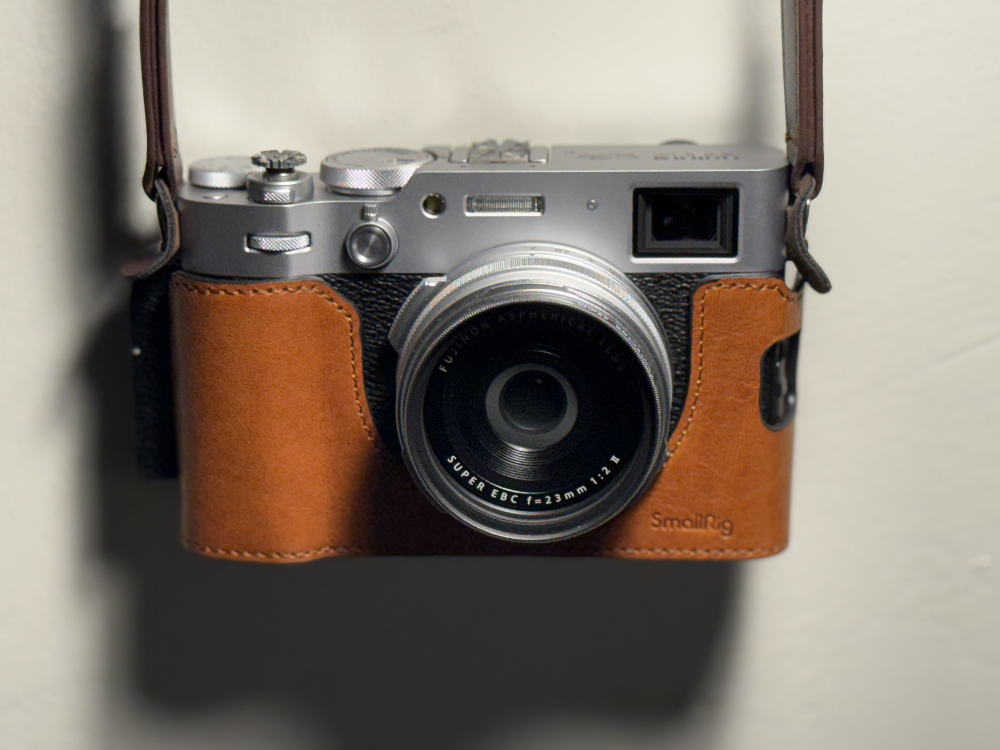

List of Projects:

Project 0: Becoming Friends with Your Camera
Explore several camera parameters and their properties through some sample photos and visual results. (Unfortunately, my Fujifilm X100VI, attached left, is a fixed focus camera, so I have to do it with my smartphone. 😢)